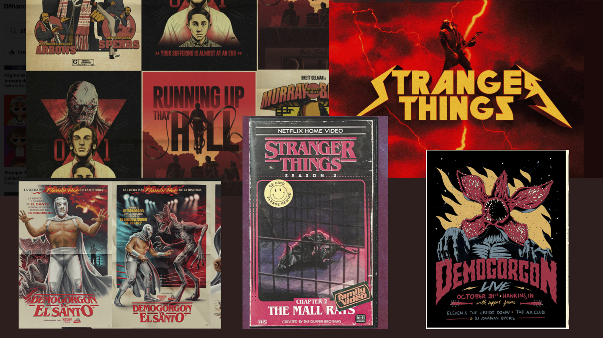
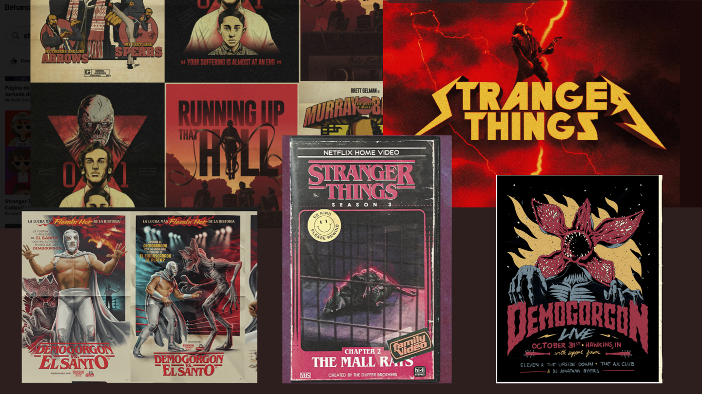

Week 1
Inspiratie document
De eerste dag van school kregen wij uitleg over ons nieuw project, genaamd: Brand a band.
We moesten onderzoek doen naar Heavy Metal en hier een document van maken. Mijn zoektocht begon bij Google en het eerste wat ik zag waren duivelse symbolen, doodshoofden
en veel donkere keuren, dit had ik meegenomen in mijn document.
Nadat ik het verhaal van de band had gehoord, had ik toch wat mildere ideeën voor de band. Dit omdat ze vooral duidelijk maakte dat zij geen boze metal band zijn.
Zij gaven aan Stranger Things leuk te vinden, vandaar dat ik foto’s van Eddie Munson erbij heb gevoegd.
Stylescape
Na al dat research was het tijd om de eerste ideeën uit te werken door middel van een stylescape. Tijdens het maken van mijn inspiratie document had ik al paar ideeën
om het richting Stranger Things te doen. De eerste stylescape is daarop gebaseerd. Ik was begonnen met de logo en ben daar verder mee gegaan.
Het is voor mij altijd makkelijker om een beeld te krijgen als het logo al klaar staat.
 

De tweede stylescape ging wat moeizamer voor mij, omdat ik de eerste al goed genoeg vond. Het was moeilijk om uit dat concept te gaan en een nieuwe te verzinnen. Daarom is deze ook iets minder uitgebreid dan de anderen Uiteindelijk hadden we ervoor gekozen om in de style van mijn stylescape nummer 1 door te gaan.
Brandguide
De stylescape met de Stranger Things thema ging door naar de volgende ronde. Dit gingen wij uitwerken in een brandguide met de tone of voice en tone of visual.
De typografie was al gekozen door mij en we hielden dezelfde kleurenpallet aan. Verder hebben we ook dezelfde logo aangehouden die ik had gemaakt.
Ik heb verder de tone of voice uitgewerkt met een slordige edit. Dit omdat ik alleen de manier van praten duidelijk wilde maken en later in de content verder zou uitwerken.
Overig heb ik nog een cover mock-up gemaakt in dezelfde thema als de stylescape.
Reflectie
We hebben feedback gekregen op onze brandguide en deze ook gelijk aangepast. Zelf heb ik enorm veel genoten van het maken van de designs en het bedenken van ideeën,
alhoewel ik moeite had met de tweede stylescape.
Week 2
Contentstrategie
In sprint 2 zijn we begonnen met het maken van onze contentstrategie. In dit bestand zie je een poster met een andere kleurenpallet,
dit omdat we een miscommunicatie hadden met de band. Naderhand (sprint 3) is dit ook aangepast.
Ik heb een presentatie gemaakt dit natuurlijk ook in de verkeerde kleurenpallet. (Dit is wederom ook al aangepast)
Voor de contentstrategie heb ik mij vooral beziggehouden met het doel.
Reflectie
Ik vond dat ik in sprint 2 inhoudelijk niet veel heb gedaan. Ik heb vooral de presentatie in elkaar gezet, de kleuren aangepast en een kopje (het doel) uitgewerkt.
Dit kwam doordat de taken al verdeeld waren op de dag dat ik ziek was.
Wederom hebben we weer feedback gekregen op ons werk en dit in sprint 3 aangepast.
Week 3
Contentstrategie
In sprint 3 hebben wij de contentstrategie aangepast na feedback van de band zelf. Ik heb het kopje doelgroep voor bedrijven uitgewerkt.
Voor de rest heeft mijn groepje de rest aangepast. Dit zal je zien in het kopje ‘Content’
Content
Wederom heb ik de presentatie aangepast met de correcte kleuren en natuurlijk aangevuld met de content die wij voor de band hebben gemaakt.
Ik heb het kopje ‘YouTube’ overgenomen. Hiervoor heb ik een YouTube banner gemaakt
en met de tone of voice van onze brandguide een stukje tekst geschreven. Verder ga ik nog een shirt bedrukken met de spullen die ik in huis heb.
Reflectie
Na wat feedback van de docent zijn we weer te werk gegaan, omdat het volgens hen niet voldoende was.
Ik vond dit natuurlijk vervelend om te horen, maar dit hield mij niet tegen om door te knallen de laatste paar uurtjes.
Reflectie algemeen
Wat heb ik geleerd?
Ik heb geleerd om in een groep te werken met mensen die andere kijk hebben voor design.
Soms komen zij met ideeën die jou totaal niet interesseren, maar toch probeert te laten werken.
Wat ging goed?
Samenwerking ging echt super in de groep. Iedereen deed wat hij/zij toegewezen kreeg of nam zelf het initiatief om het aan te pakken.
Wat kon beter?
Qua design zitten we niet allemaal op hetzelfde level. Het is moeilijk om een ingewikkelde huisstijl te creëren en verwachten dat iedereen het net zo goed kan na bootsen.
Dit is natuurlijk iets wat je niemand kwalijk kan nemen, omdat niet iedereen hetzelfde achtergrond heeft.